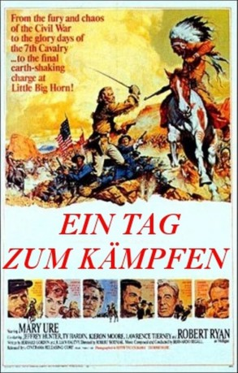
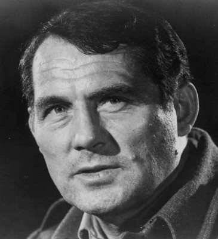
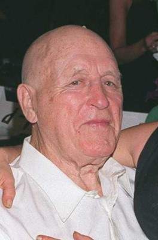
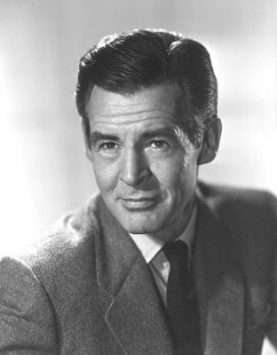
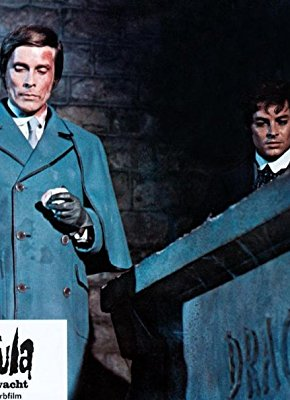

#3525 Big Horn - Ein Tag zum Kämpfen
Alternativ: Custer of the West
 
 IMDB-Wertung: 5.7 / 10
IMDB-Wertung: 5.7 / 10  Metascore: 0
Metascore: 0 
Der junge George Armstrong Custer übernimmt nach einer erfolgreichen Militärkarriere im amerikanischen Bürgerkrieg das Kommando über die 7. Kavallerie. Seine Frau Elizabeth begleitet ihn in den Westen. Die ansässigen Indianer begehren gegen die Reservationspläne der amerikanischen Regierung auf.
Jahr: 1967
Dauer: 135 Minuten
FSK: 12
Land: England Studio: AlphaTonspuren:
Untertitel: Deutsch,
Auflösung: 720p (1280x536) Größe: 3573 MB
Genre: Drama, Krieg, Western, Geschichte, Biographie
Regisseur: Robert Siodmak
Drehbuch: Dode B. Levenson
Soundtrack:
Darsteller:
-  Robert Shaw als Gen. George Armstrong Custer
- Mary Ure als Elizabeth Custer
- Ty Hardin als Maj. Marcus Reno
 Jeffrey Hunter als Capt. Benteen
Jeffrey Hunter als Capt. Benteen-  Lawrence Tierney als Gen. Philip Sheridan
 Marc Lawrence als The gold miner
Marc Lawrence als The gold miner- Fred Kohler Jr. als
-  Robert Ryan als Sgt. Patrick Mulligan
- Joaquín Gómez als Man , uncredited
- Kieron Moore als Chief Dull Knife
- Charles Stalmaker als Lt. Howells
- Robert Hall als Sgt. Buckley
- Jack Gaskins als
-  Jack Taylor als
- John Clark als
- Bill Christmas als
- Luis Rivera als
- Joe Zboran als
- Clemence Bettany als
- Jack Cooper als
 Barta Barri als
Barta Barri als - Carl Rapp als
- John F. Dillon als
- Bud Strait als
- John Underhill als
- Dennis Kilbane als
- Robert Reynolds als
Datei: X:\HD-Western-1960-1979\Big Horn - Ein Tag zum Kämpfen (1967, FSK12, 1280x536).mkv seit 24.04.2016
Festplatte: HD Eastern+Western
 Es gibt insgesamt 110 Filme in der Gruppe 'HD-Western-1960-1979'
Es gibt insgesamt 110 Filme in der Gruppe 'HD-Western-1960-1979'